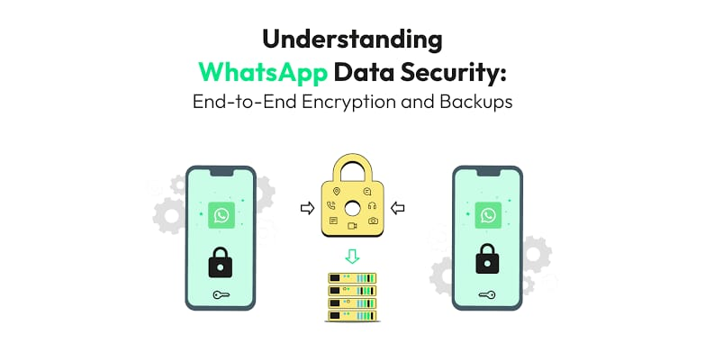
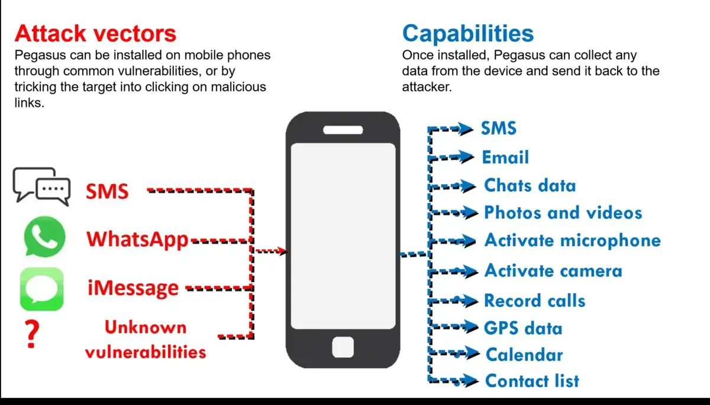

Effortless WhatsApp Data Management: Backup, Restore, and Optimize Like a Pro
In today's fast-paced digital world, WhatsApp plays an integral role in keeping us connected with family, friends, and colleagues. With the vast amount of sensitive data we share—messages, photos, and vital documents—managing this information efficiently is crucial to prevent data loss and protect our privacy. Prioritizing WhatsApp security ensures that our conversations remain safe from potential threats, while also keeping our devices running smoothly. This guide will help you seamlessly navigate the processes of managing, restoring, and backing up your WhatsApp data, ensuring both convenience and security.
Impact and Risks
Poor WhatsApp security management exposes you to risks such as:
- Data Breaches: Unencrypted backups and outdated app versions can leave your chat history and personal information vulnerable to hackers.
- Privacy Leaks: Sensitive media and messages stored on your device or cloud can be accessed by unauthorized users.
- Account Hijacking: Without two-step verification, someone with access to your phone number could take over your WhatsApp account.
- Identity Theft: Hackers can use your personal information to impersonate you, steal your identity, or scam your contacts.
Real-Life Incident
In 2019, a major security vulnerability allowed hackers to install spyware on phones through WhatsApp by simply calling users. Even if the call wasn't answered, the spyware could still be installed, giving attackers access to messages, cameras, and microphones. This breach exposed the importance of regularly updating WhatsApp and managing security settings to close potential loopholes.
